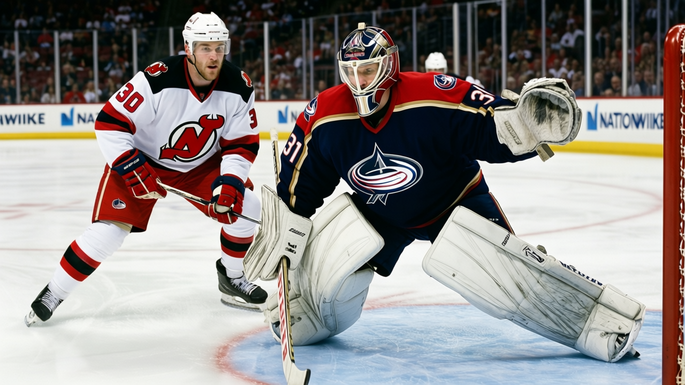

TOR
TOR NYI
NYI PIT
PIT FLA
FLA BOS
BOS55-43: Columbus Runs the League's Tightest Goaltending Split, and Its Starter Is in the Morale Basement
Marc Denis has 19 starts in 44 games, $1.00M, zero contract years left, and a Morale Scale mark of 72, tied for the lowest in hockey. The 22-year-old with the other 24 starts is trending up.
 Doug ReimerAnalytics editor, ex-video coach · The Slot Report
Doug ReimerAnalytics editor, ex-video coach · The Slot Report
 Marc Denis86 has started 19 of
Marc Denis86 has started 19 of  Columbus Blue Jackets's 44 games. He earns $1.00M, his contract has zero years left after June, and the Bureau's Morale Scale gives him 72, tied with nine other players for the lowest mark in the league. The 25 starts he did not get belong to
Columbus Blue Jackets's 44 games. He earns $1.00M, his contract has zero years left after June, and the Bureau's Morale Scale gives him 72, tied with nine other players for the lowest mark in the league. The 25 starts he did not get belong to  Pascal Leclaire86, 22.
Pascal Leclaire86, 22.
No club outside Toronto splits its goaltending closer. Columbus's 24-19 split between its two primary starters is the tightest two-goalie allocation in hockey.
Ice time follows grade in this league. The 14 players rated 85 or above average 29.2 minutes a game; the 198 men below 75 average 15.5. Goaltenders face the same logic with less room to absorb it: there is one crease, no half-starts, and the man on the short rotation knows his assignment before the puck drops.
Two goaltenders, one grade
Denis and Leclaire share the same overall in the Bureau's Book: 86. The Development Index separates them. Leclaire is a riser at +4, climbing from a base of 83 to 86. Denis is absent from both the risers and the fallers lists, meaning his form tracks his base grade. Columbus has two 86s and a coach who has split them 24 to 19.
Leclaire, 22, earns $1.10M on a one-year deal. Denis earns $1.00M on a contract that expires in June. He is younger, a rising Index, and on a deal that ends before Denis's market window fully closes. The rotation points toward Leclaire as the 2005-06 starter.


 St. Louis Blues
St. Louis Blues

 Philadelphia Flyers
Philadelphia Flyers

 Los Angeles Kings
Los Angeles Kings
 Vancouver Canucks
Vancouver Canucks
The top 10 clubs by smallest gap between their two leading goaltenders. Toronto at 19-18 is the closest; Toronto has its own paper. Columbus at 24-19 is the tightest two-goalie split in the rest of the league.
Goaltenders own the bottom of the Morale Scale
Ten players sit at 72, the lowest morale mark in hockey. Four are goaltenders: Denis,  Roman Turek84 at
Roman Turek84 at  Calgary Flames ($4.40M, 3 years),
Calgary Flames ($4.40M, 3 years),  Corey Schwab78 at
Corey Schwab78 at  New Jersey Devils ($0.60M, 0 years) and
New Jersey Devils ($0.60M, 0 years) and  Martin Brodeur93 ($6.70M, 4 years). Goaltenders fill roughly one of every six active roster slots. The position is overrepresented at the bottom by a factor of about four, which tracks allocation rather than temperament. One crease, two or three men, and no way to share the job in partial starts.
Martin Brodeur93 ($6.70M, 4 years). Goaltenders fill roughly one of every six active roster slots. The position is overrepresented at the bottom by a factor of about four, which tracks allocation rather than temperament. One crease, two or three men, and no way to share the job in partial starts.
Brodeur at 93 overall, $6.70M and 4 years locked in, has started 36 of NJ's 42 games. His 74 tracks his club's room average of 87.8, sixth-lowest in the league, rather than any timeshare problem. Turek has 82% of CGY's starts, $4.40M, 3 years left, and still sits at 72. Neither money nor ice buys contentment when the contract itself is the anchor.
What Columbus looks like from the outside
Columbus Blue Jackets is 15-20-2 with 46 points, a $48.98M payroll, and $1.06M per point on the Contract Ledger. The room's morale average is 86.6, second-lowest in hockey, above only  Ottawa Senators at 84.5. The club has logged 22 injury spells and 171 days lost.
Ottawa Senators at 84.5. The club has logged 22 injury spells and 171 days lost.
Columbus has scored 142 goals and allowed 142. Exactly even.  Mighty Ducks of Anaheim also sits at 138-138. No other club in the league has a goals-for total that matches its goals-against total. A team that is no better than its opponents has no reason to commit fully to one man in the crease. The coach who splits two 86s is running a calculation, and that calculation lands Denis at 72.
Mighty Ducks of Anaheim also sits at 138-138. No other club in the league has a goals-for total that matches its goals-against total. A team that is no better than its opponents has no reason to commit fully to one man in the crease. The coach who splits two 86s is running a calculation, and that calculation lands Denis at 72.
 Geoff Sanderson83, Columbus's captain, told The Tunnel's Marcus Bell about the itinerant life: "You get moved enough times and you stop being a guy who belongs somewhere. You're just a guy with a suitcase." Denis is about to become one.
Geoff Sanderson83, Columbus's captain, told The Tunnel's Marcus Bell about the itinerant life: "You get moved enough times and you stop being a guy who belongs somewhere. You're just a guy with a suitcase." Denis is about to become one.
The remainder of the season decides the June market
If Leclaire's share of starts grows past 60% by April, Denis's June market shifts from "reliable backup with starting upside" to surplus. If the split holds at 24-19, Columbus has told both men that neither is the answer, and two contracts worth $1.00M and $1.10M become interchangeable.
The Development Index has the 22-year-old climbing; the Morale Scale has Denis at 72. The men who share the crease are the ones who pay for it.